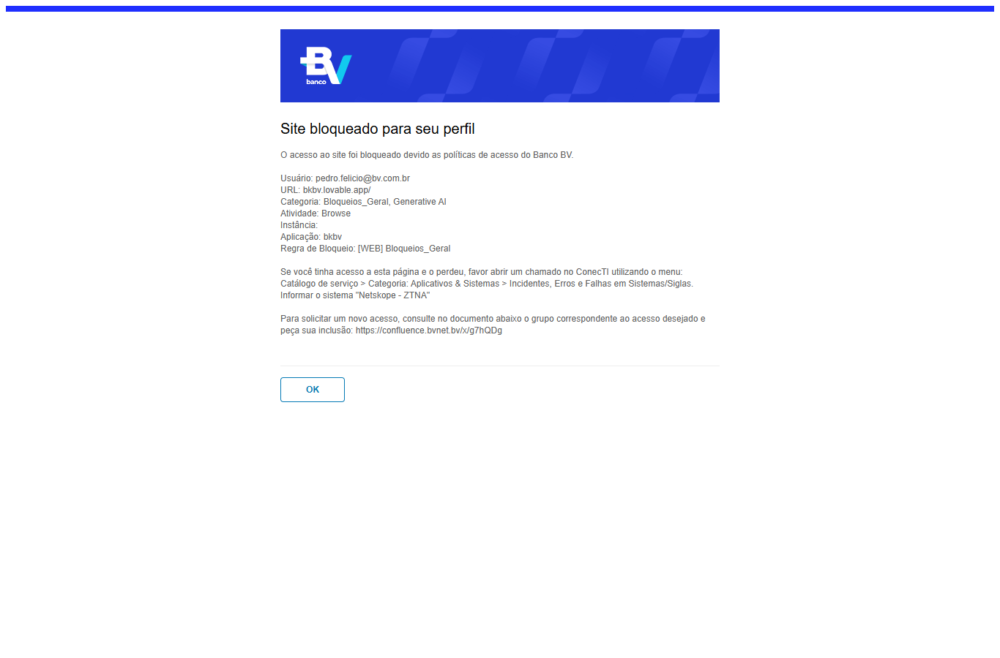

SIMIO · dossiê de candidato · campanha simio-20261118-184932-cc75 · gerado em 2026-11-18T20:44:56+00:00
https://bkbv.lovable.app/
INCONCLUSIVE Prioridade LOW · Cenário E_INSUFFICIENT_EVIDENCE · Revisão humana: PENDING
Este dossiê apresenta indícios para apoio à auditoria. Não constitui conclusão regulatória. As conclusões automatizadas devem ser verificadas contra as evidências brutas abaixo (screenshots, catálogo e arquivos com hash). Conteúdo de terceiros é exibido como texto; links não são clicáveis por segurança.
Página não pôde ser inspecionada (HTTP 403: acesso bloqueado pelo filtro web corporativo da rede); sem base para conclusão. [Revisor: HUMAN_REVIEW] Questionamentos registrados; encaminhado para revisão humana.

| Ref | Tipo | Local | Conteúdo |
|---|---|---|---|
| E-URL | domain | url | URL final: https://bkbv.lovable.app/ (domínio: bkbv.lovable.app) |
| E-COLLECT | network | collection | Status da coleta: BLOCKED; HTTP 403; ocorrências: HTTP 403: acesso bloqueado pelo filtro web corporativo da rede |
| E-SHOT-VIEWPORT | screenshot | viewport | evidence\Cb45607d505\attempt-1\viewport.png (sha256 05f7714b3ac735bd…) |
| E-SHOT-FULL | screenshot | page | evidence\Cb45607d505\attempt-1\fullpage.png (sha256 05f7714b3ac735bd…) |
| E-TITLE | title | head | Site bloqueado para seu perfil |
| E-HEAD-1 | heading | page | Site bloqueado para seu perfil |
| E-FOLD | text | viewport (acima da dobra) | Site bloqueado para seu perfil O acesso ao site foi bloqueado devido as políticas de acesso do Banco BV. Usuário: pedro.felicio@bv.com.br URL: bkbv.lovable.app/ Categoria: Bloqueios_Geral, Generative AI Atividade: Browse Instância: Aplicação: bkbv Regra de Bloqueio: [WEB] Bloqueios_Geral Se você tinha acesso a esta página e o perdeu, favor abrir um chamado no ConecTI utilizando o menu: Catálogo de serviço > Categoria: Aplicativos & Sistemas > Incidentes, Erros e Falhas em Sistemas/Siglas. Informar o sistema "Netskope - ZTNA" Para solicitar um novo acesso, consulte no documento abaixo o grupo correspondente ao acesso desejado e peça sua inclusão: https://confluence.bvnet.bv/x/g7hQDg OK |
| E-CTA-1 | cta | page | OK |
| E-IMG-1 | image | page (acima da dobra) | imagem alt='logo' src=data:image/png;base64,iVBORw0KGgoAAAANSUhEUgAAAoAAAABkCAIAAACZ5RbJAAABTGlDQ1BJQ0MgcHJvZmlsZQAAeNp9kL9LAnEchp9LQ/BCGm4KqVsCDYs4mwNzyCDisF8qLedpKpz27Typ/gSjuRyb2toCaYm2gkahojnoDwhuKbkGKy2od/k8PLzDhxeG/I (640x100, acima da dobra) |
| E-TXT-001 | text | page | O acesso ao site foi bloqueado devido as políticas de acesso do Banco BV. |
| E-TXT-002 | text | page | Para solicitar um novo acesso, consulte no documento abaixo o grupo correspondente ao acesso desejado e peça sua inclusão: https://confluence.bvnet.bv/x/g7hQDg |
| Dimensão | Sinal | Achado | Refs |
|---|
Página não pôde ser inspecionada (HTTP 403: acesso bloqueado pelo filtro web corporativo da rede); sem base para conclusão.
Conteúdo não coletado; nenhuma atribuição possível além do domínio.
| Tipo | Valor | Ref | Contexto |
|---|---|---|---|
| domain | lovable.app | E-URL |
Mapeamento indicativo para apoio à auditoria. Não constitui conclusão regulatória; a decisão definitiva pertence à auditoria.
Fonte: NORMATIVE
Art. 14. O contrato de correspondente deve estabelecer: [...] II - vedação à utilização, pelo contratado, de logomarca ou de outros atributos que sejam similares aos adotados pela instituição contratante em suas agências, postos de atendimento, sítio eletrônico na internet, aplicativo ou outras plataformas de comunicação em rede;
Evidência observada: —
Informação faltante:
Fonte: NORMATIVE
Art. 14. O contrato de correspondente deve estabelecer: [...] III - divulgação ao público, pelo contratado, de sua condição de prestador de serviços à instituição contratante, identificada pelo nome com que é conhecida no mercado, com descrição dos produtos e serviços oferecidos e canais de contato da instituição contratante, inclusive de sua ouvidoria, em local visível, em destaque e em formato legível, por meio de: a) sítio eletrônico do correspondente na internet, acessível na página inicial; b) aplicativo e outras plataformas de comunicação em rede do correspondente; [...]
Evidência observada: —
Informação faltante:
Fonte: NORMATIVE
Art. 3º O correspondente atua por conta e sob as diretrizes da instituição contratante, que assume inteira responsabilidade pelo atendimento prestado aos clientes e usuários por meio do contratado.
Evidência observada: —
Informação faltante:
Limitações: requisitos contratuais/internos não fornecidos: mapeamento limitado ao texto normativo
Decisão: HUMAN_REVIEW → INCONCLUSIVE / LOW
Questionamentos registrados; encaminhado para revisão humana.
| Tema | Severidade | Questionamento | Refs |
|---|---|---|---|
| unanalyzed_visual_context | MEDIUM | Identidade visual não foi avaliada por modelo multimodal; verificar screenshots. | E-SHOT-VIEWPORT |
| Fonte | Consulta / hipótese | URL original | Título / trecho |
|---|---|---|---|
| grounding | sites de empresas independentes no Brasil que usam a marca Banco BV como nome ou identidade principal do próprio site, sem serem o Banco BV H1-identity | https://bkbv.lovable.app/ | lovable.app **Observação factual:** a imensa maioria dos domínios comerciais contendo o prefixo ou nome "BV" (`bvfinanceira.com.br`, `bvfinanciamento.com.br`, `bvcredito.com.br`, `bvemprestimo.com.br`, `minhabv.com.br`) está registrada oficialmente em nome do próprio conglomerado do Banco Votorantim S.A. | **Aplicação em `lovable.app` (Clone institucional/atendimento):** Página hospedada em plataforma externa de desenvolvimento que reproduz integralmente a identidade principal, menus de produtos (*Empréstimos, Financiamentos, Cartões*), links de atendimento (*2ª via de boleto, WhatsApp*) e até o rodapé de direitos autorais (`© 2026 Banco Votorantim S.A.`), sem pertencer ao domínio oficial da instituição |
Original: https://bkbv.lovable.app/
Final: https://bkbv.lovable.app/
| Artefato | Caminho | SHA-256 | Bytes |
|---|---|---|---|
| screenshot_viewport | evidence\Cb45607d505\attempt-1\viewport.png | 05f7714b3ac735bd82e99406398d064bb141141cc0cbb02c75138579440c4dbb | 45615 |
| screenshot_full | evidence\Cb45607d505\attempt-1\fullpage.png | 05f7714b3ac735bd82e99406398d064bb141141cc0cbb02c75138579440c4dbb | 45615 |
| html | evidence\Cb45607d505\attempt-1\page.html.txt | e31d66ec299147ff0d47c70e09f0bbcb118c53b569f006207630e7f1f31248e1 | 65277 |
| text | evidence\Cb45607d505\attempt-1\text.txt | 5b230efce1c064edd0dbb50f5e7d2bb63628457d5a096ef49fde0eb412f8892c | 709 |
| page_data | evidence\Cb45607d505\attempt-1\page.json | 3b313721e2a12200f25c1dfa4e70cebd5fc5dd75ce0d1b07020912f0c2475fb0 | 2545 |
| Quando | De | Para | Nota |
|---|---|---|---|
| 2026-11-18T19:13:21+00:00 | DISCOVERED | QUEUED | prioritised (score 4.0) |
| 2026-11-18T19:13:49+00:00 | QUEUED | COLLECTING | |
| 2026-11-18T19:13:54+00:00 | COLLECTING | COLLECTED | |
| 2026-11-18T19:13:55+00:00 | COLLECTED | ANALYZING | |
| 2026-11-18T19:13:55+00:00 | ANALYZING | REVIEWING | |
| 2026-11-18T19:13:55+00:00 | REVIEWING | INCONCLUSIVE |